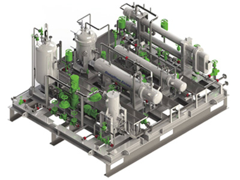

- 공기 윤활 시스템
- 선체 바닥에 공기를 분사하여 해수와의 마찰 저항을 줄여 선박의 연비를 향상 시키는 친환경 시스템입니다.
삼성 중공업이 자체 개발한 SAVER Air 를 170,000m3급 LNG선에 적용한 결과, 5% 이상의 연료 절감 효과가
입증되었으며, 향후 다양한 선종에 확대 적용해 수주 경쟁력을 향상시키고자 합니다.
- 연료 절감 장치
- 삼성중공업이 독자 개발한 SAVER Stator-D는 선박의 프로펠러로 유입되는 해수의 흐름을 균일하게 함으로써
프로펠러의 추진력을 증가시켜 연비를 향상시키는 연료 절감 장치입니다. 삼성중공업은 SAVER Stator-D를
선박에 적용해 약 2%의 연비 절감 효과를 입증했으며, 이를 통해 향후 수주 경쟁력 강화에 기여할 것으로 기대합니다.
- 해수 흐름 제어장치
- 대형 컨테이너선의 선수에 설치해 선체 주변의 해수 흐름을 제어함으로써 연비를 향상시키는SAVER CAP을 개발했습니다.
SAVER CAP을 통해1.8%~3.7% 수준의 연비가 개선되며 선체 진동도 줄어 선수 의장품과 컨테이너 박스의 안전한 보관이 가능합니다.
-

- S-Fugas
LNG 연료공급 시스템
- 최근 2행정 LNG 연료 추진 엔진이 LNG선에 적용되고 있습니다. MEGI 엔진은 300bar의
고압 FGSS가 요구되며, X-DF 엔진은 16bar의 저압 FGSS가 요구됩니다.
-

- S-Reli
부분 재액화 시스템
- 삼성중공업은 선박 연료로 사용되지 못한 증발가스를 재액화해 화물창에 저장하는
부분재액화 시스템(S-Reli)을 개발했습니다.
-

- S-Regas
재기화 시스템
- S-Regas의 국산화를 통해 원가 절감은 물론, 납기와 품질을 효율적으로 관리할 수 있어
삼성중공업의 수주 경쟁력을 한 층 강화했습니다.
-

- X_Reli
XDF용 재액화시스템
- X-DF 엔진을 적용하는 LNG 운반선에서 발생하는 증발가스를 재액화하기 위한 시스템으로,
별도의 냉매를 사용하지 않고, 재액화 용량을 증대하여 BOG 손실을 최소화하였습니다.
-

- Thermal
냉열발전 시스템
- 글리콜 혼합액을 사용하지 않고 별도의 열전달매체를 이용해서 해수를 이용한 기화,
터빈을 통한 팽창하는 과정에서 발전이 가능합니다.
-

- Membrane
연료탱크
- 독립형 멤브레인 연료탱크를 확보함에 따라 향후 LNG 연료 컨테이너선/VLCC 등과
같이 대용량 연료탱크 수주시 Type 연료탱크 대비 원가절감 효과를 기대할
수 있을 것으로 예상하고 있습니다.